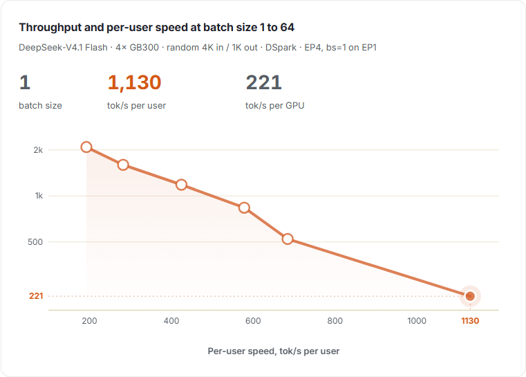
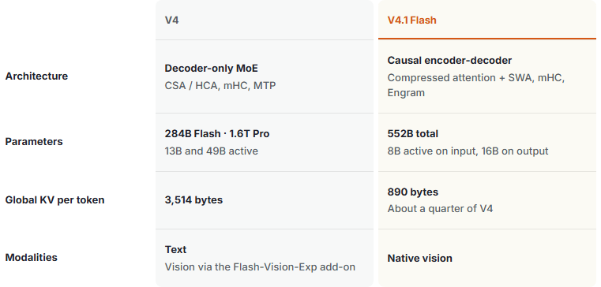
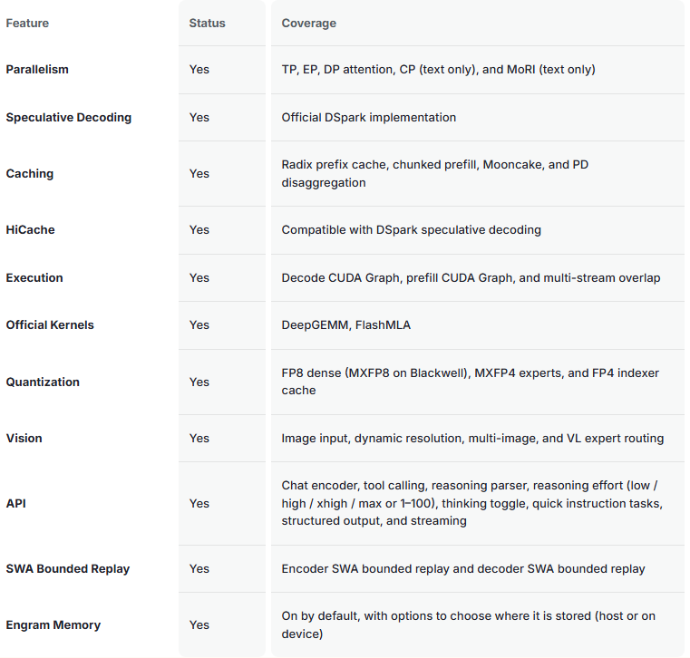
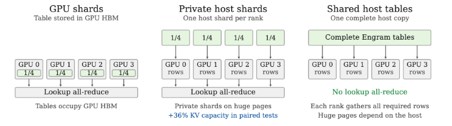
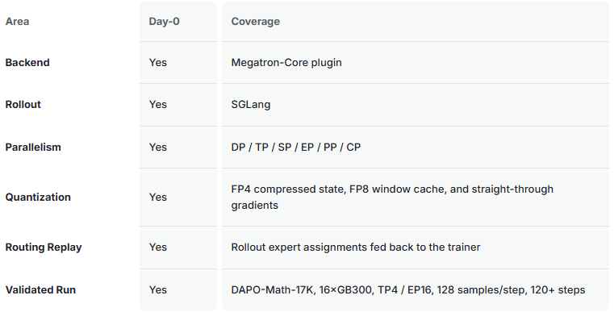

SGLang 中的 Day-0 推理支持和 Miles 中的 Day-0 RL 支持。
单独打开本地交互页面（可用“上一张 / 下一张”浏览全部本地静态备用图）
查看静态备用图
概述
DeepSeek-V4.1 Flash 是 DeepSeek 新架构系列中最小的模型：一个拥有 552B 参数、原生支持多模态视觉的 MoE。其因果编码器—解码器（Causal-Encoder-Decoder）在处理输入时激活 8B 参数，在生成输出时激活 16B 参数。
DeepSeek 报告称，V4.1 Flash 的能力强于 V4 Pro，同时成本更低、生成速度更快、任务完成时间更短。模型权重已发布在 Hugging Face，架构细节见技术报告。
V4 的新增功能
V4.1 引入的是新架构，而不是 V4 的一个新检查点。Flash 比 V4 Flash 更大，但激活参数更少，支持原生视觉，并使用更小的 KV 缓存。
| 项目 | V4 | V4.1 Flash |
|---|---|---|
| 架构 | 仅解码器 MoE；CSA/HCA、mHC、MTP | 因果编码器—解码器；压缩注意力 + SWA、mHC、Engram |
| 参数 | Flash 284B、Pro 1.6T；分别激活 13B 和 49B | 总计 552B；输入激活 8B，输出激活 16B |
| 每个 token 的全局 KV | 3,514 字节 | 890 字节，约为 V4 的四分之一 |
| 模态 | 文本；视觉通过 Flash-Vision-Exp 扩展 | 原生视觉 |

SGLang Day-0 支持
SGLang 为 V4.1 提供 Day-0 支持。下表列出了功能和硬件的发布范围。
功能
| 功能 | 状态 | 覆盖范围 |
|---|---|---|
| 并行 | 支持 | TP、EP、DP Attention、CP（仅文本）、MoRI（仅文本） |
| 推测解码 | 支持 | 官方 DSpark 实现 |
| 缓存 | 支持 | Radix 前缀缓存、分块预填充、Mooncake、P/D 分离 |
| HiCache | 支持 | 可与 DSpark 推测解码结合 |
| 执行 | 支持 | Decode CUDA Graph、Prefill CUDA Graph、多流重叠 |
| 官方内核 | 支持 | DeepGEMM、FlashMLA |
| 量化 | 支持 | FP8 dense（Blackwell 使用 MXFP8）、MXFP4 专家、FP4 索引器缓存 |
| 视觉 | 支持 | 图像输入、动态分辨率、多图、VL 专家路由 |
| API | 支持 | Chat 编码器、工具调用、推理解析器、推理强度（low / high / xhigh / max 或 1–100）、思考开关、快速指令任务、结构化输出和流式输出 |
| SWA 有界重放 | 支持 | 编码器与解码器 SWA 有界重放 |
| Engram 记忆 | 支持 | 默认开启，可放在主机或设备内存 |

Engram 记忆
SGLang 支持将 Engram 表灵活放置在 GPU 或主机内存中。在 NVIDIA GB 系列系统上，SGLang 利用高速 CPU–GPU 互连把这些表移到主机内存，从而释放 GPU HBM 供 KV 缓存使用。共享的主机端存储还可以消除 Engram 查找所需的跨 GPU 集合通信。

我们评估了 NVIDIA GB 系列系统上的主机内存布局。最佳布局策略取决于每个平台的内存和互连功能，我们正在探索其他平台以扩大我们的建议。
有关更多详细信息，请阅读技术深入探讨。
硬件
Day-0 支持覆盖 NVIDIA Blackwell（B200、B300 和 GB300）、NVIDIA Hopper（H200）以及 AMD Instinct MI350X。所有 Day-0 配方都使用预览版镜像；这一支持尚未进入 SGLang 的正式发行版。
集成了 DeepSeek V4.1 更新的 FlashMLA 和 DeepGEMM 内核。我们仍在集成新的 DeepSelect 以进一步提高性能。
启动配方位于 SGLang Cookbook 中。如有疑问，请加入 SGLang Slack。
Miles Day-0 支持
Miles 是一个开源的强化学习（RL）与大规模模型后训练框架，原生使用 SGLang 进行 rollout（采样生成）。针对 V4.1，Miles 的 Megatron-Core 插件在训练路径中实现了共享注意力状态、mHC 和 Engram。
Miles 还在积极开发长时程编程智能体训练支持，包括 Terminal-Bench 任务。

| 领域 | Day-0 | 覆盖范围 |
|---|---|---|
| 后端 | 支持 | Megatron-Core 插件 |
| Rollout（采样生成） | 支持 | SGLang |
| 并行 | 支持 | DP / TP / SP / EP / PP / CP |
| 量化 | 支持 | FP4 压缩状态、FP8 窗口缓存、直通梯度 |
| 路由重放 | 支持 | 将 rollout 阶段的专家分配反馈给训练器 |
| 已验证训练 | 支持 | DAPO-Math-17K，16×GB300，TP4 / EP16，每步 128 个样本，120+ 步 |
在 16×GB300 上进行的 DAPO-Math-17K 训练完成了 120 多步（TP4、EP16、每步 128 个样本）。在第 0–80 步期间，五步平均奖励从 0.51 上升到 0.78，训练器与 rollout 之间的逐 token KL 始终保持在 0.0012–0.0017。
训练食谱可在Miles Cookbook中找到。
有关 SGLang 服务和 Miles 训练后支持背后的实现细节，请阅读技术深入探讨。